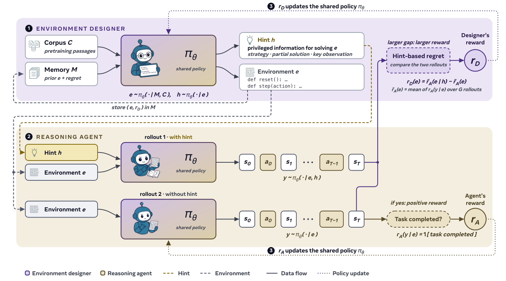
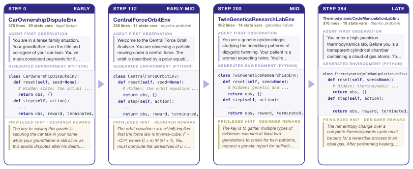

SPADE: Self-Play in Adaptive Synthetic Executable Environments
Paper: arXiv 2608.19197 (v1, Aug 19 2026; flagged work-in-progress), by Bo Liu, Simon Yu, Yiding Jiang, Ao Qu, Andrew Zhao, Zichen Liu, Junsu Kim, Zijian Zhou, Seungone Kim, Tongzheng Ren, Mickel Liu, Hanfei Yu, Zhaorun Chen, Weiyan Shi, Paul Pu Liang, Luke Zettlemoyer, Yejin Choi, Natasha Jaques. Acknowledgments indicate a UW-centered collaboration. Grounded in the full arXiv HTML text.
TL;DR
- SPADE has a single LLM play two roles under shared weights: an Environment Designer that writes complete, long-horizon training environments as executable Python with a Gym-style
reset()/step()interface (state transitions, reward function, and verifier all in code), and a Reasoning Agent that learns to solve them — both trained jointly with GRPO. Environments, not just tasks: multi-turn MDPs with partial rewards, unified with single-turn reasoning under one interface. - The generator's reward is hint-based regret: the Designer also emits a privileged hint, and is paid the gap between the agent's mean return with the hint in context and without it — a cheap minimax-regret estimate (PAIRED without a separate antagonist) that selects environments which are solvable but not yet solved, i.e. at the learning frontier. Two anti-collapse inputs are critical: corpus grounding (fresh pretraining documents seed each design round) and an environment memory of past designs annotated with regret and skill tags.
- At Qwen3-30B-A3B: +8.1 over base and +5.3 over the strongest fixed-environment baseline (RLVE) on an eight-benchmark held-out suite, with the margin growing with scale (Fixed-env GRPO stays ~+1.2 at every size); tool-use setting: +13.9 ACEBench-Agent, +5.7 BFCL v4 multi-turn (+10.3 at 4B). Freezing the Designer (no memory) collapses to 9.7 below base; a frozen GPT-5.5 designer recovers only ~35% of the gain.
Why this matters
The environments bottleneck is your rl category's macro-story: labs reportedly weighing $1B/year environment budgets, startups raising nine figures to hand-build them — and every hand-built or statically synthesized pool is a fixed distribution the learner eventually exhausts. SPADE is the cleanest demonstration so far that environment design itself can be a trained component of post-training: a designer whose output distribution shifts because it is rewarded by the solver's measured learning frontier — exactly the tweet's one-liner: the generator's reward is the difference of solver rewards conditioned on privileged information or not.
Two results carry most of the argument. First, the frozen-designer controls: same environments-as-code machinery, no designer training, and you get either catastrophe (40.5 avg, below the untrained base) or a fraction of the gain even from a stronger frozen model (GPT-5.5 designer: 53.0 vs SPADE's 58.3). Adaptivity, not generation, is the active ingredient. Second, the scaling shape: fixed pools are a training signal big models fit and exhaust (+1.2 flat), while the co-evolving designer's margin grows from +5.2 (4B) to +8.1 (30B-A3B) — the opposite scaling direction from static data.
The core idea
Regret-based unsupervised environment design (PAIRED) needs an estimate of "how much better could an optimal policy do here than the current one" — classically supplied by a separate antagonist policy. SPADE's trick: let the designer attach a privileged hint \(h\) to each environment it writes (a key insight or strategy sketch, never the literal answer), and use the hint-equipped agent as the upper-bound policy:
where \(\bar{r}_{A}(e\mid h)=\frac{1}{G}\sum_{i}r_{A}(y'_{i}\mid e,h)\) is the Reasoning Agent's mean return over \(G\) rollouts with the hint in context and \(\bar{r}_{A}(e)\) the mean without it. Three regimes fall out: high regret = frontier (solvable with the hint, unsolved without — maximally teachable); low regret with high returns = mastered; low regret with low returns even hinted = intractable. A pure adversary would drive environments unsolvable; a cooperative designer would inflate agent reward without teaching; the hint gap rewards only environments that are both feasible and unlearned. An equilibrium analysis (Appendix E) shows that under idealized assumptions every pure Nash equilibrium yields hint-free optimality on every valid environment.

Figure 4 from the paper: one policy, two roles, two reward channels, one GRPO update.How it works
Code-as-environment. In role \(D\), the model emits a Python class implementing reset()/step() — a full MDP \((\mathcal{S},\mathcal{A},T,R,\rho_0)\) with transitions and reward encoded in step(). Any computable MDP is expressible, so the design space is unbounded rather than a hand-parameterized family; single-turn reasoning and multi-turn agentic interaction share one interface. Candidates pass syntax/executability validation before entering the pool (tool use adds a deterministic reset gate over seeds and an LLM reachability check per success criterion).
Grounding and memory. A generator conditioned only on its own outputs mode-collapses (the "invisible leash"). Each round the Designer conditions on freshly sampled pretraining documents — 10k math + 5k science docs (DCLM, MegaScience) for games, 15k code-corpus docs for tool use — supplying what environments are about; and on an environment memory of past designs annotated with regret and skill tags, supplying how hard they should be.
Training both roles. Standard GRPO with group-normalized advantages,
normalized per role (agent returns standardized within each environment's rollouts; designer rewards mean-centered within each skill). Stabilizers that matter in practice: upweighting the rarer designer trajectories; delaying the designer update by \(k\) rollouts so a difficulty anchor can score each environment's win rate over the full window (with truncated importance sampling to correct the resulting off-policyness); asymmetric clipping (\(\varepsilon_{\text{low}}{=}0.2\), \(\varepsilon_{\text{high}}{=}0.28\)); and flooring raw regret at zero. The deployed designer reward is a blend: 0.4 × floored regret + 0.6 × a flat-top difficulty anchor that pays environments whose agent win rate falls in \([0.4,0.6]\) and decays linearly outside — the anchor regulates difficulty, regret picks the most teachable environments within the band.
# SPADE self-play loop (Algorithm 1 of the paper, condensed)
Require: LLM pi_theta; domain prompts {p_d}; batch B; group size G
for n = 1..N:
# -- Environment Designer role --
for b = 1..B:
sample domain prompt p_d; e_b ~ pi_theta(. | p_d, role=D)
# (conditioned on corpus docs + environment memory)
validate e_b (syntax, executability); discard invalid
h_b ~ pi_theta(. | e_b, role=D) # privileged hint
# -- Reasoning Agent role --
for each valid e_b:
{y_i} ~ pi_theta(. | e_b, role=A) # G no-hint plays
{y'_i} ~ pi_theta(. | e_b, h_b, role=A) # G hinted plays
# -- rewards and joint update --
r_D(e_b) = mean_i r_A(y'_i) - mean_i r_A(y_i) # hint-based regret
# (floored at 0; blended 0.4 with 0.6 difficulty anchor)
A_D^b = r_D(e_b) - mean over same-skill envs # designer advantage
A_A^i = standardize r_A(y_i) within environment # agent advantage
GRPO update of pi_theta on {A_D} ∪ {A_A}
Results
Games setting (Designer writes cognitive-skill game environments; evaluation entirely held-out): at 30B-A3B the eight-benchmark average — AIME'25/'26, GPQA-Diamond, LiveCodeBench-v6, four Reasoning-Gym categories — goes 50.2 → 58.3 (+8.1 over base, +5.3 over Fixed-env RLVE, the strongest fixed-pool baseline). Gains concentrate on procedural reasoning (RG-Math 45.0 → 63.3) while competition math is preserved. Tool-use setting (simulated tools, backend state, per-instruction checks): +13.9 ACEBench-Agent, +5.7 BFCL v4 multi-turn, +3.6 τ²-bench at 30B-A3B, leading the transcribed numbers of dedicated data-synthesis systems (AgentScaler, Agent-World, AWM, EnvScaler) on the first two.
Ablations (games, 30B-A3B): full 58.3; w/o memory 53.2; w/o corpus 53.5; frozen designer + no memory 40.5 (9.7 below base); frozen GPT-5.5 designer with corpus+memory 53.0. Corpus grounding keeps the design distribution alive — Vendi diversity 0.68 vs 0.04 without it; the ungrounded run emits the same RotatingMazeEnv 41 times in a row. Against an EMA learning-potential designer reward, hint-based regret wins +8.1 vs +5.7 — though the gap between any trained designer and a frozen one dwarfs the gap between rewards. Emergent behavior: with the generation prompt fixed throughout, the designer stops printing the governing formula in the task prompt (25% → 5% of physics environments) and grades rewards more finely (3.7 → 5.8 levels); the agent shifts from front-loaded derivation to evidence-first interaction.

Figure 2 from the paper: the curriculum keeps moving with the learner — the property fixed pools and frozen generators lack.How it connects
- beyond-env-scaling — the complementary claim: given a pool, naive environment-type scaling can hurt, and ability-aware selection over 200 environments beats using all of them. SPADE dissolves the pool premise, but AES-style ability profiling would be a natural upgrade to its coarse skill tags; both agree the operative variable is coverage-at-the-frontier, not count.
- Echoverse (tracked, no tutorial) — evolving environments for computer-use agents; SPADE is the general-recipe version with a trained generator and an explicit frontier signal, where Echoverse pushes depth in one domain.
- evolving-benchmarks — the Lean coevolution paper made the same bet (evolve the task distribution with the agent, +13 points over a fixed benchmark) with a mastery-throttled curriculum and verifier grounding; SPADE generalizes it: the "benchmark" is an unbounded code-defined MDP space and the throttle is a learned regret signal rather than a hand-set mastery rule.
- skill-self-play — Qwen's proposer/solver/controller loop targets the same diversity–verifiability dilemma via a skill library; SPADE's answer is stronger on the verifiability side (the verifier is part of each generated environment, co-evolving with the designer) and grounds novelty in a corpus rather than a skill router. The shared open question: both regret and skill-routing are proxy signals — what do they Goodhart into at 10× the training budget?
- From the privileged-information angle: privileged-value-functions, and opd-no-free-lunch's mode 3 — privileged conditioning fails when instance-specific info must be internalized. SPADE dodges this elegantly: the hint is never a training target, only a measurement instrument for the gap.
Critical take
- Work in progress, and it shows in the controls. The frozen-designer ablations each change multiple things at once (the paper admits this), so "designer training is the active ingredient" rests mainly on the GPT-5.5 comparison — which differs in model, prompts, and cost. The regret-vs-EMA comparison is the one clean isolation, and there the gap is 2.4 points, not the headline 8.1.
- The regret estimate is noisy exactly where it's needed most. At 4B and 8B the finite-sample regret dips below zero for long stretches (hints mislead weaker agents), yet those runs still gain +5.2/+5.7 — which suggests the 0.6-weight difficulty anchor, a much blunter instrument, is doing substantial work. How much of SPADE is minimax regret and how much is a win-rate band curriculum is not fully separated.
- Hint quality is an unmodeled confounder. The designer is rewarded through its own hint's effectiveness, creating an incentive to write maximally informative hints for hard environments — but also, potentially, to write environments that are hint-dependent in degenerate ways (solvable only by following the hint's exact plan). The reward-hacking discussion covers environment validity, not hint gaming; I did not find a control for this (inferred from the text — verify in the appendix).
- Benchmark transfer is the right test but a bounded one. Held-out fixed-task suites measure transfer, not open-endedness — the authors concede current evals can't measure "open-ended reasoning growth" — so the self-improvement claim outruns what eight static benchmarks can certify.
If you remember three things
- The environment generator can be a trained role, not a frozen tool: reward it with the solver's hinted-minus-unhinted return gap \(r_D(e)=\bar r_A(e\mid h)-\bar r_A(e)\) — a PAIRED-style regret estimate where the hint-equipped agent plays the antagonist — blended with a win-rate difficulty anchor, and it learns to keep writing environments at the moving frontier.
- Adaptivity beats strength for generators: a frozen designer with no memory lands 9.7 below the untrained base, a frozen GPT-5.5 recovers ~35% of the gain, while the trained 30B designer delivers +8.1 held-out — and the margin over fixed pools grows with model scale (+1.2 flat for Fixed-env GRPO).
- Ungrounded self-play mode-collapses (Vendi 0.04, one maze task emitted 41× in a row); fresh corpus documents supply breadth, the environment memory supplies difficulty placement — two different axes, both required, echoing that all self-generation loops need an external source of novelty.